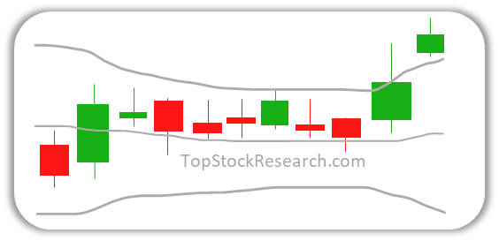

Bollinger Bands, one of the most popular indicators, is an envelope around stock price indicating the price range of the stock based on stock volatility. When price moves towards the upper band it is often considered as overbought and when it is near the lower range it is considered as oversold.
